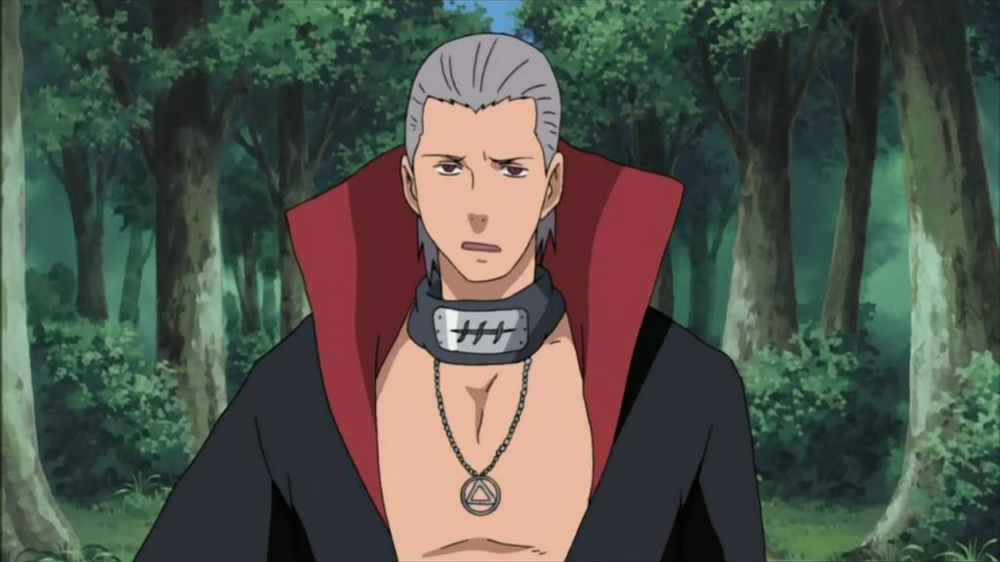

Inicio:
Hidan (飛段, Hidan) fue un fanático religioso de Yugakure y miembro de Akatsuki. Llevaba el anillo "Tres" (三, San) en el índice izquierdo. Adoraba a Jashin, un dios de la destrucción, y buscaba sacrificios en su nombre. Su compañero en Akatsuki fue Kakuzu, con quien formaba un equipo letal a pesar de su constante conflicto.
Historia:
Hidan provenía de Yugakure (Aldea Oculta de las Aguas Termales), una aldea conocida por su estilo de vida pacífico. Sin embargo, Hidan rechazó esta filosofía y se unió a la religión de Jashin, un culto que glorificaba la muerte y el sufrimiento. Tras cometer numerosos crímenes en nombre de su dios, Hidan fue expulsado de su aldea y se unió a Akatsuki, donde encontró un propósito en la destrucción y el caos.

Durante su tiempo en Akatsuki, Hidan participó en la captura de varias bestias con cola junto a Kakuzu. Sin embargo, su fanatismo y su desprecio por las reglas lo llevaron a constantes conflictos con su compañero. Finalmente, Hidan fue derrotado por Shikamaru Nara, quien lo engañó y lo enterró vivo en el Bosque de la Muerte de Nara como venganza por la muerte de Asuma Sarutobi.

Habilidades:
Hidan era inmortal gracias a los rituales de Jashin, lo que significaba que podía sobrevivir a cualquier herida, incluyendo decapitaciones o mutilaciones. Su técnica más poderosa era el Ritual de Jashin, que requería que dibujara un círculo en el suelo y consumiera la sangre de su enemigo. Una vez activado el ritual, cualquier daño que Hidan se infligiera a sí mismo se reflejaba en su oponente.

Además, Hidan era experto en el uso de su hoz de tres hojas, que utilizaba para recolectar la sangre de sus enemigos y activar su ritual. Aunque no era un ninja particularmente hábil en técnicas elementales, su inmortalidad y su ritual lo convertían en un oponente extremadamente peligroso.